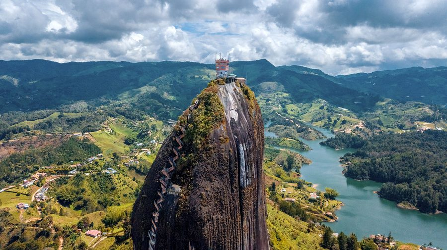

Dag 10 · La Piedra del Peñón · Kleurrijke Zocalo's · Dagtrip vanuit Medellín
Neem een Uber naar de bushalte in Medellín en daarna de bus naar Guatapé (±2 uur). Een prachtige rit door de Antioquiaanse heuvels langs het Embalse del Peñol-meer.

Een van de indrukwekkendste rotsformaties ter wereld: een 200 meter hoge granieten monoliet uit het water rijzend. Met een tuktuk naar de voet en dan 740 treden omhoog via een smalle trappengang in een spleet van de rots. Boven wacht een spectaculair panorama.
Wat is het? El Peñol (of La Piedra del Peñón) is een enorme granieten monoliet van 200 meter hoog die uit het Embalse del Peñol-meer rijst. Gevormd door magma 65 miljoen jaar geleden. Een van de meest iconische plekken van Colombia.
De klim: 740 treden via een smalle spleet tussen de rotsen. Metalen trap die zigzaggend naar boven loopt. Ongeveer 20-30 minuten klimmen. Neem water mee!
Boven: Restaurant, souvenirwinkels en een ongelooflijk panorama over het kunstmatige meer met zijn eilandjes en de kleurrijke stad Guatapé beneden.
Tuktuk: Neem een tuktuk van het centrum van Guatapé naar de voet van La Piedra.
Guatapé is de kleurrijkste stad van Colombia. Elk huis heeft unieke ingekleurde reliëf-panelen (zocalo's) op de onderkant van de gevels die taferelen uit het dagelijkse leven verbeelden. Wandel door de straatjes en bewonder de details.
De volgende ochtend (dag 11) vertrekt de bus terug naar Medellín vanuit Guatapé. Van de bushalte Medellín tot de luchthaven is het ±1 uur met Uber. De vlucht naar Cartagena vertrekt om 20:20 — tijdig vertrekken is cruciaal!